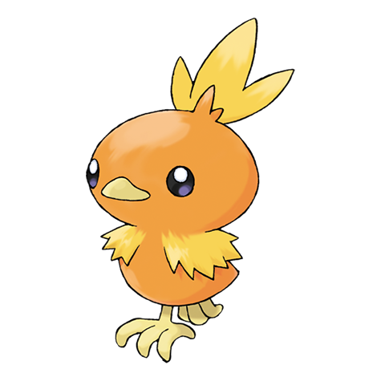

Você conseguiu o tipo FOGO!
O tipo Fogo representa treinadores apaixonados, determinados e cheios de energia. Você enfrenta desafios de frente e não desiste facilmente.
Pokémons sugeridos:

Charmander n°0004
Pokémon do tipo Fogo com aparência de um pequeno lagarto laranja. Sua chama representa sua vitalidade e força. Corajoso e determinado, é um dos iniciais mais populares.

Torchic n°0255
Pokémon do tipo Fogo que lembra um pequeno pintinho. Apesar do tamanho, é cheio de energia e pode gerar calor intenso para usar ataques poderosos.

Fuecoco n°0909
Pokémon do tipo Fogo com aparência de um crocodilo vermelho. Alegre e tranquilo, adora comer e surpreende com suas fortes chamas.